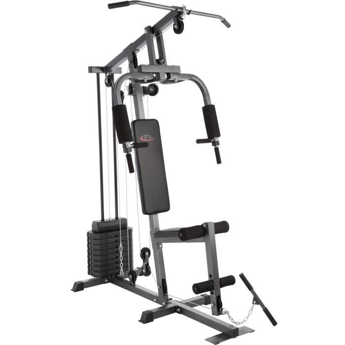
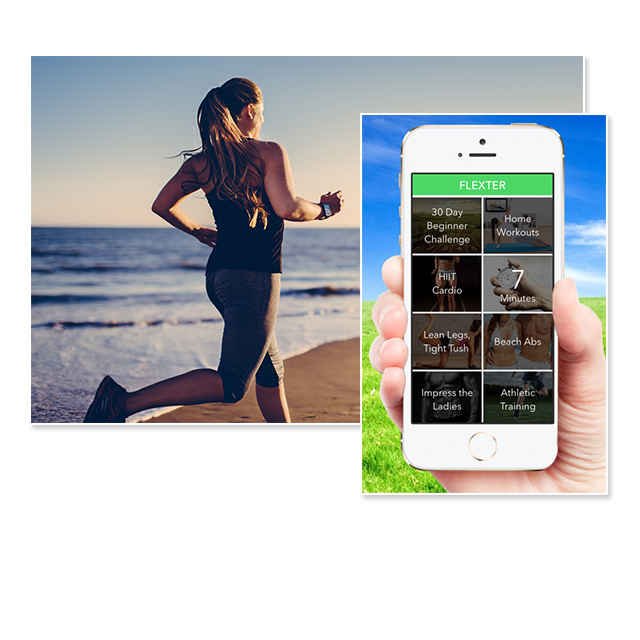
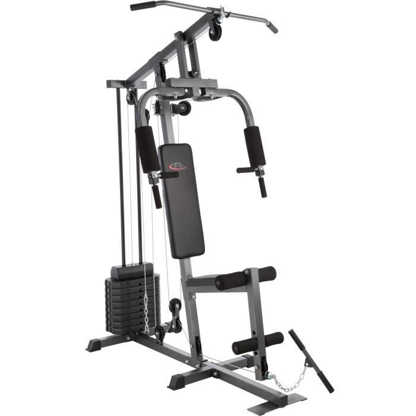
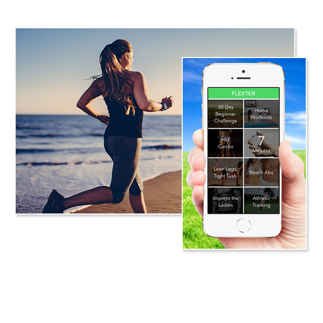

Spécificités :

Nos machines sont de toute dernière technologie, ce qui vous permet de vous entraîner dans les meilleures conditions possibles.

Nous avons développé une application qui vous permet de suivre vos performances et votre progression. Aussi, elle vous booste lorsque vous avez un baisse de motivation.

Nos machines sont de toute dernière technologie, ce qui vous permet de vous entraîner dans les meilleures conditions possibles.

Nous avons développé une application qui vous permet de suivre vos performances et votre progression. Aussi, elle vous booste lorsque vous avez un baisse de motivation.